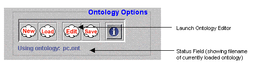
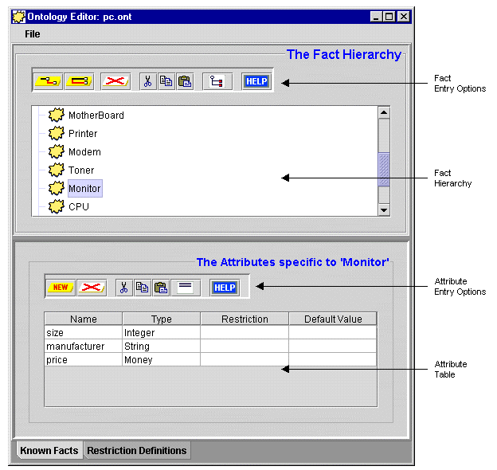
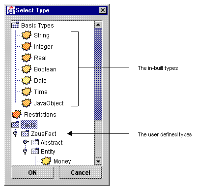

The Zeus Agent Building Toolkit |
The Application Realisation Guide |
| Contents | Introduction | Ontologies | Building Task Agents |
Utility Agents | Task Agent Configuration |
Agent Implementation |
An ontology is a set of declarative knowledge representing every significant concept within a particular application domain. The significance of a concept is easily assessed, if meaningful interaction can not occur between agents without both parties being aware of it, then the concept is significant and must be modelled. Note that for convenience we use the term 'fact' throughout ZEUS to describe an individual domain concept.
Prior to attempting this stage you should have already identified the following:
the key concepts within the problem domain
the significant attributes of each concept
the types of each attribute
any constraints on the attributes
The remainder of this section describes how to enter this information into the ZEUS Ontology Editor. This can be launched from the ZEUS Agent Generator tool, which displays the following panel:
|  |
| Figure 2.1: A screenshot of the Ontology Options panel of the Generator tool |
If the Ontology Editor is not running, click on the "Edit" button in the Generator tools' Ontology Options toolbar, or select the "New Ontology" menu option from the Ontology Menu. This will create a new (empty) ontology and launch the Ontology Editor. From now onward all facts entered through this editor will become part of this ontology.
If the Ontology Editor is already running, select the "New" menu option; if there is currently an ontology in memory you will be asked whether you want to save it. Clicking on the "New" button in the Generator tools' Ontology Options toolbar will clear the current ontology without opening the Editor.
If the Ontology Editor is not running, click on the "Load" button in the Generator tools' Ontology Options toolbar, or select the "Load Ontology" menu option from the Ontology Menu.
If the Ontology Editor is already open, a new ontology can be loaded by choosing the "Load…" menu option.
This will summon a file requester, locate the file containing the Ontology and click "OK". If there is already an ontology in memory, you will be asked if you want to save it before it is removed.
When the ontology has been loaded and parsed, its contents will appear in the Ontology Editor's windows. A screenshot of the Ontology Editor is shown in Figure 2.1.
Note that the fact pane of the Ontology Editor is divided into two, an upper panel that displays the Fact Hierarchy, and a lower panel that displays the attributes of the currently selected fact. The panels are separated by a split-pane that can be moved up or down to enlarge one panel at the expense of the other.

Figure 2.2: A Screenshot of one of the panels of the Ontology Editor.
Notice how the one of the nodes in the fact hierarchy (Monitor) has been selected,
and its attributes are being shown in the table below.
The first stage in creating a new fact is to determine its position within the existing fact hierarchy:
If the new fact has no parents in the existing hierarchy you will typically choose the Entity node and click on the "Add New Child Fact" button.
The Entity fact is used to represent concepts that have physical realisations, like objects and commodities. Where this is not appropriate the ZEUS fact hierarchy also has a fact called Abstract that does not possess cardinality and value attributes.
If the new fact inherits from an existing fact, select the parent node and click on the "Add New Child Fact" button.
To make the new fact share the same parent as another, (a useful short cut), select the existing fact and click the "Add New Peer Fact" button.
A new entry will now appear in the fact tree, double click on it and rename to whatever is appropriate.
Ensure that the fact to which the attribute will be added is the selected node of the fact hierarchy, if not, clicking on the fact selects it. The existing attributes for the selected fact will then appear in the Attribute Table beneath the Fact Hierarchy window.
Click on the "New" button in the toolbar above the Attribute Table. This will create a new entry in the table, double-click on it to rename it as appropriate.
Clicking on the 'Toggle Shown Attributes' will hide or show the attributes inherited from the fact's parents. This can be useful for determining whether an attribute has already been declared higher in the fact hierarchy.
Types serve to restrict the set of valid values the attribute can take, and will be one of the basic types, a restriction or another fact.
|  |
| Figure 2.3: A screenshot of the Type Selection window |
Double-click on an entry in the Attribute Table, this will summon a window showing all a hierarchy of currently known types, as shown in Figure 2.3.
The basic types have been predefined, they are:
String: any combination of alpha-numeric characters, plus the _ and $ characters only
Integer: whole numbers in the range -2147483648 to +2147483647, (these are the minimum and maximum integer values in Java).
Real: all numbers in the range 4.94e-324 to 1.798e308, (these are the minimum and maximum double values in Java).
Boolean: the words true or false
Date: numerically expressed in the European format: dd/mm/yyyy, (i.e. 2 digits for day/ 1 or 2 for month/4 for year). Terms can also be separated by dashes, i.e. dd-mm-yyyy. ZEUS is millennium compliant.
Time: numerically expressed using the 24-hour clock format, as either hh:mm:ss, (i.e. 1 or 2 digits for each of hours:minutes:seconds). For convenience, seconds can be omitted, and hh:mm used instead.
JavaObject: an opaque reference to a runtime Java object
Restrictions are custom types used to further restrict the values possible for basic types. These are entered separately, see 'How to Create a Restriction'. All previously entered restrictions are listed under the "Restrictions" node of the type selection window.
Where attributes need to assume more complex values, their type can be specified as a particular fact. All previously entered facts are listed under the "Facts" node of the type selection window.
An alternative to creating a restriction rule is to restrict each attribute individually, this is achieved by double clicking on the "Restriction" cell of the attribute entry, which opens a small green-coloured panel through which the restriction can be typed.
The syntax of restrictions is that of a simplified expression, full details will be included in a later release.
To give an attribute a default value, double click on the "Default" cell of the attribute entry, this opens a small green-coloured panel through which the default value can be typed.
The syntax of the value is dependent on the attribute type. Defaults can not be set for attributes whose type is a restriction or another fact.
Restrictions are types that have been constrained to a particular set or range of values. Although it is possible to restrict attributes without creating a restriction (see 'How to Restrict an Attribute'), restrictions allow for reuse, and provide meaningful names. Restrictions are entered through the 'Restriction Definitions' pane of the Ontology Editor.
To create a restriction click on 'Restriction Definitions' tab at the bottom of the Ontology Editor. This shows the list of known restrictions (initially empty).
Add a new restriction by clicking on the "New" button on the toolbar, this will create a new entry in the Restriction Table, double click on it to edit its name to something more appropriate.
Now set the type of the restriction by double clicking on its "Type" cell, this brings up a window with a hierarchy of basic types (see 'How to Set the Type of an Attribute' for details) and current restrictions. Facts can not be chosen as a type.
Now double click on the "Restriction" cell, this opens a small green-coloured panel through which the default value can be typed. The syntax will be dependent on the type chosen previously.
The restriction will be syntactically checked upon entry, invalid entries being displayed in red.
Ontologies are currently saved in an ASCII file using our own format; saving ontology in a more standardised format, like XML is under consideration.
If the Ontology Editor is not open, click on the "Save" button in the Generator's Ontology Options toolbar, or select the "Save Ontology" menu option from the Ontology Menu.
If the Ontology Editor is still open, choosing the "Save" menu option will save its contents.
If the ontology is unnamed a file requester will appear, and you will be prompted for a filename to save it under.
If the ontology has already been named it will be saved under that name. To save it under a different name, choose the "Save Ontology As…" menu option.
This function is not yet supported in the current Ontology Editor.
| Contents | Introduction | Ontologies | Building Task Agents |
Utility Agents | Task Agent Configuration |
Agent Implementation |